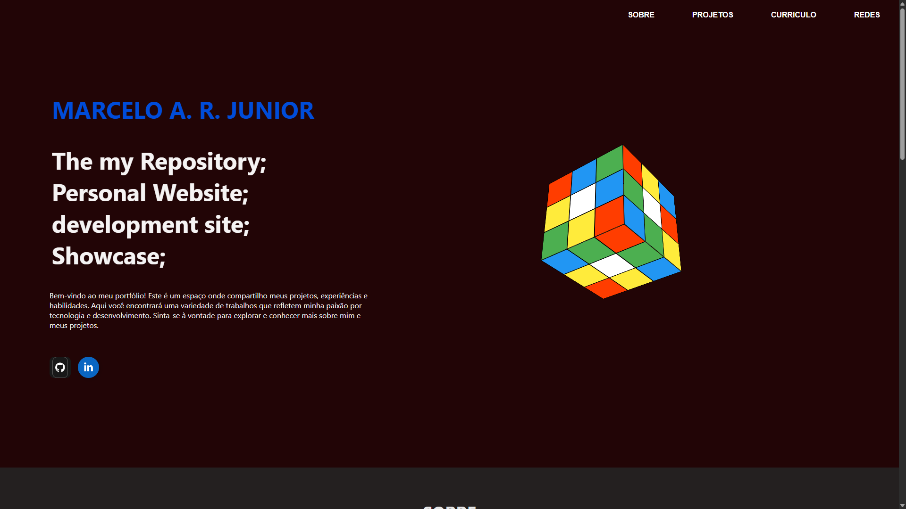

SOBRE
Me chamo Marcelo, nascido em 2007 em Itapecerica da Serra em São Paulo ,estudante de tecnologia, tecnico pela etec (Escolas Técnicas Estaduais) pelo Governo do Estado de São Paulo e administradas pelo Centro Paula Souza, tenho interesse em desenvolvimento web, versionamento com Git e na criação de projetos práticos para meu portfólio. Alem disso, estou sempre buscando aprender novas tecnologias e aprimorar minhas habilidades para me tornar um profissional mais completo e preparado para os desafios do mercado de trabalho.
Tive contato com tecnologia desde cedo, sempre me interessando por como as coisas funcionam, e isso me levou a explorar diferentes áreas, como programação, design e administração de sistemas. Comecei meus estudos na área de tecnologia em 2022 com informatica basica, apesar de ja ter estudado um pouco por conta propria. Passando por algumas instituições, como Sesi, ETEC, IFRS e atualmente a Fatec. Atualmente com ideias de projetos na area de desenvolvimento, com conhecidos e amigos, nos quais quero compartilhar e expor nesse portifolio.
PROJETOS
Aqui estão alguns dos projetos em que trabalhei, ou estou trabalhando atualmente, incluindo projetos pessoais, acadêmicos e colaborativos. Cada projeto representa uma oportunidade de aprendizado e crescimento, e estou sempre aberto a novos desafios e colaborações. Sinta-se à vontade para explorar os detalhes de cada projeto.
Promoin
Projeto de um sistema de promoções, onde o cliente pode cadastrar suas promoções, e os consumidores podem acessar e aproveitar as ofertas disponíveis. O sistema inclui recursos como cadastro de usuários, gerenciamento de promoções, e uma interface amigável para facilitar a navegação e a utilização do serviço.
Projeto foi criado juntamente de outras pessoas, feito pelo curso de desenvolvimento web da ETEC, onde o objetivo era criar um sistema de promoções para o TCC, tinha tanto Login por consumidor, e pelo lojista.
Membros que participaram do projeto: Marcelo Antonio Rodrigues Junior, Rafael Marques, Angelo Luiz, Hugo Leonel e Elton. Todos pela Etec, e o projeto foi desenvolvido utilizando as seguintes tecnologias: HTML, CSS, JavaScript, Node.js, react, Xampp, PHP e Mysql.

portifolio
Projeto de um portfólio pessoal, onde apresento meus trabalhos e habilidades. Feito com HTML, CSS e JavaScript.
O objetivo do projeto era criar um espaço para exibir meu portfólio e destacar minhas habilidades e experiências além de trabalhos pela faculdade e me autodesafiar.
CURRICULO
Aqui estão algumas informações sobre minha formação acadêmica, experiências profissionais e habilidades. Meu currículo reflete minha jornada de aprendizado e crescimento na área de tecnologia, destacando minhas conquistas e competências. Sinta-se à vontade para explorar os detalhes do meu currículo e conhecer mais sobre minha trajetória profissional.
Formação Acadêmica
- Curso Técnico em Desenvolvimento de Sistemas - ETEC (FEV 2024 - JUL 2025)
- Curso Superior em Desenvolvimento de Software Multiplataforma - FATEC (2026- Presente)
- Ensino medio completo (2025)
- SENAI EAD -Excel básico (2023)
- ENSINO FUNDAMENTAL I & II
- SENAI -Implantação de serviços em nuvem AZ-900 (2023)
- SENAI EAD -Preparação para o mercado de trabalho (2023)
- UNIMAR -Treinamento Python (2024)
- UNIJOVEM -Informática básica (2024)
- NUBE EAD -Marketing Pessoal (2024)
- IFRS EAD -Fundamentos da informática (2024)
Experiências
- Estagio - Telemarketing - Paschoalotto (2023)
- Freelancer - Suporte Técnico em manutenção em computadores – Etec Antônio Devisate (2025)
- Estagio - Assistente administrativo – CW15 Coworking (2025 - 2026)
- Freelancer – Desenvolvimento, TI e Adm – Syspay sistema inteligente (horários flexíveis)
- Estagio - Assistente administrativo – International Workplace Group – Régus CW15 – Marilia, SP
Alura mini cursos
- Futuro conectado: profissões e tecnologia
- Listas, funções e repetição: criando um jogo de corrida (pt. 1)
- Lógica de programação: criando arte interativa com P5.js
- Página web: desenvolvendo uma ferramenta interativa de estudo
- Página web: utilizando a responsividade em aplicações com HTML e CSS - Parte 1
- Página web: utilizando a responsividade em aplicações com HTML e CSS - Parte 2
- Algoritmos: criando uma aventura com HTML, CSS e JavaScript
- Página web: desenvolvendo um site de assinatura de conteúdo
- Página Web: criando um catálogo de vídeos com HTML e CSS
- Conectando-se ao Mundo Profissional: Tecnologia, Currículo e Entrevista
- Funções: desenvolvendo um recomendador de filmes com JavaScript
- Lógica de programação: desenvolvendo um jogo estilo Pong
- Repositório digital: aprenda a compartilhar seus projetos
- Linguagem de programação: criando projetos artísticos com Javascript
- Listas: criando o seu jogo de cartas com listas e padrões
- Listas: criando o seu jogo de cartas com listas e padrões
- Projetos com programação: utilizando a criatividade através dos códigos
competências tecnicas
- Conhecimentos em suporte técnico (hardware e software)
- Manutenção preventiva e corretiva de computadores
- Instalação e configuração de sistemas operacionais (Windows/Linux)
- Noções básicas de redes e infraestrutura de TI
- Desenvolvimento de sistemas em (Java, Java script, HTML, CSS, PHP, Python, c)
- Banco de dados (MySQL, SQL Server, etc.)
- Versionamento de código (GitHub)